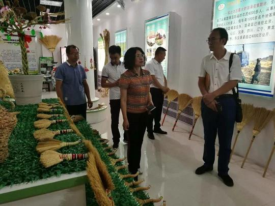

按照年初调研工作计划和安排，农工党赤峰市委于6月26日至29日，先后深入赤峰市松山区、敖汉旗、巴林左旗、喀喇沁旗就《赤峰市乡村振兴中存在短板和对策》开展调研。

调研组每到一处，都详细了解当地设施农业发展、乡风文明、龙头企业及企业一二三产业融合发展、农村合作社、乡村旅游业等方面的发展情况和存在问题，并针对乡村振兴中加强党支部建设，以产业兴旺带动农民致富，搞好本土特色旅游和民宿建设，鼓励返乡大学生回村创业，加强农村精神文明建设等方面，与参与调研的领导、致富带头人及村干部进行了深入交流和沟通。
通过调研，掌握了详实的数据，发现了存在的问题，总结了经验，为形成数据准确、内容完善、措施合理，理由充分的调研报告打下了坚实基础。